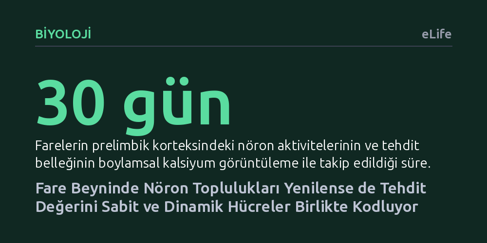

BIYOLOJI · eLife · 2026-10-22
Araştırmacılar, farelerin prelimbik korteksindeki nöronların zamanla değişmesine rağmen tehdit ve güvenlik uyaranlarını nasıl kararlı biçimde ayırt ettiğini 30 gün boyunca inceledi. Hücre toplulukları sürekli yenilense de, sabit kalan nöronlar ile öğrenmeyle şekillenen dinamik nöronların işbirliği sayesinde tehdit değerinin bozulmadan kodlandığı bulundu.
Belleğin korunması için nöronların hiç değişmemesi gerektiği düşüncesini yıkarak, sürekli yenilenen hücre ağlarının da kararlı anıları ve tehlike algısını başarıyla taşıyabildiğini gösteriyor.

Hayatta kalmak, tehlikeyi güvenli olandan ayırt etmeyi ve benzer durumlarla karşılaşıldığında doğru tepkiyi vermeyi gerektirir. Örneğin bir tehlike sesine maruz kaldığımızda, beynimiz sadece o sesi değil, ona yakın frekanslardaki sesleri de bir tehdit işareti olarak değerlendirir. Buna tehdit genellemesi denir. Ancak tehlike sinyali ile zararsız durumlar arasındaki ayrımın da korunması hayati önem taşır; aksi takdirde canlı, her uyarıcıda gereksiz bir korku ve panik durumuna sürüklenir.
Sinirbilimcileri uzun süredir düşündüren asıl bilmece ise beynin bu dengeyi nasıl kurduğu ve nasıl koruduğudur. Ön beyinde yer alan prelimbik korteks bölgesinin korku ve tehdit tepkilerinde kilit bir rol oynadığı biliniyor. Fakat şaşırtıcı olan şu ki, bu bölgedeki nöron toplulukları günler ve haftalar içinde sürekli değişmekte, eski hücreler devreden çıkıp yerlerine yenileri gelmektedir. Bu derece değişken ve hareketli bir hücresel yapının, haftalar sonra bile aynı tehlike sinyalini nasıl tutarlı ve kademeli bir şekilde hatırlayabildiği bugüne kadar aydınlatılamamıştı.
Araştırmacılar bu soruyu yanıtlamak için serbestçe hareket edebilen farelerin prelimbik korteksine mikro lens yerleştirerek ileri düzey kalsiyum görüntüleme tekniğini kullandı. Bu yöntem, hücrelerin her elektriksel aktivitesinde ortaya çıkan parlamaları kaydederek bireysel nöronların tek tek haritalanmasını sağladı. Deneyde farelere belirli bir ses frekansı hafif bir ayak şokuyla eşleştirilerek öğretildi; başka bir ses ise güvenli bırakıldı. Ayrıca sadece sesleri duyan ancak hiçbir şok almayan bir kontrol grubu da çalışmaya dahil edildi.
Hayvanların bellek ve tehdit genelleme tepkileri, şartlanmadan sonraki 1., 15. ve 30. günlerde yeni ortamlarda test edildi. Testler sırasında sadece tehlikeli ve güvenli sesler değil, aradaki frekanslar da dinletildi. Özel video takip sistemleri ve minyatür ivmeölçerler sayesinde farelerin donup kalma davranışları saniyesi saniyesine kaydedildi. Nöronların salt donma hareketini mi yoksa sesin taşıdığı tehdit anlamını mı kaydettiğini birbirinden ayırmak için genelleştirilmiş doğrusal modeller kurularak 30 gün boyunca aynı hücrelerin izi sürüldü.
Bulgular, prelimbik korteksteki hücrelerin çoğunun oturumlar arasında yer değiştirdiğini ve devir-daim yaptığını doğruladı; nöronların büyük kısmı yalnızca bir veya iki test oturumunda aktifti. Buna rağmen, beynin bütününde sese verilen kademeli tehdit tepkisi 30 gün boyunca hiç bozulmadan varlığını korudu. Tehlikeli sese en yüksek aktivite gösterilirken, frekans uzaklaştıkça hücresel tepki de kademeli olarak azaldı. Üstelik matematiksel modelleme, nöron aktivitesinin salt donma hareketinden ziyade sesin taşıdığı öğrenilmiş tehdit değerini doğrudan yansıttığını ortaya koydu.
Bu kararlılığın ardındaki sır incelendiğinde iki farklı hücre grubunun ortak çalıştığı anlaşıldı. İlk günden itibaren hep aktif kalan sabit nöronlar, tehlike ve genelleme cetvelini ilk andan itibaren kararlı şekilde muhafaza ediyordu. Sürece sonradan katılan dinamik nöronlar ise zaman içinde eğitilerek seçiciliklerini giderek keskinleştirdi. Böylece sabit hücreler ana şablonu korurken, yeni katılan hücreler zamanla tehdit ve güvenliği daha hassas biçimde ayırt etmeye katkı sağladı.
Bu çalışma, sinirbilimdeki en temel kabullerden birini dönüştürüyor: Bir anının uzun süre sabit kalabilmesi için onu tutan nöronların değişmeden yerinde durması gerekmiyor. Prelimbik korteks, sürekli yenilenen hücresel yapıya rağmen, topluluk düzeyinde değişmeyen bir temsil haritası oluşturabiliyor. Tıpkı personeli sürekli değişen ancak kurumsal hafızası ve işleyişi bozulmayan köklü bir kurum gibi, beyin de bireysel hücrelerin ötesinde dengeli bir kolektif kodlama yürütüyor.
Bu mekanizmanın anlaşılması, travma sonrası stres bozukluğu ve yaygın kaygı gibi durumlarda görülen aşırı tehdit genellemesinin kökenlerine de ışık tutuyor. Güvenli uyaranların da tehlike gibi algılandığı bu rahatsızlıklarda, beynin sabit ve dinamik nöron dengesindeki bozulmalar rol oynuyor olabilir. Ancak çalışmanın farelerde gerçekleştirildiği ve henüz doğrudan insan zihninde kanıtlanmadığı akılda tutulmalıdır.